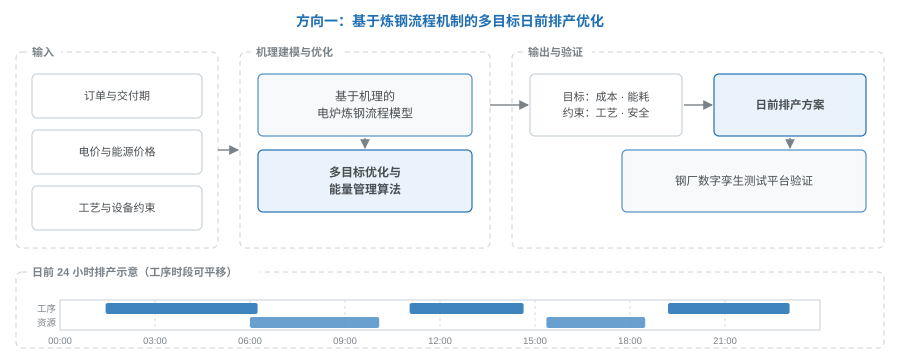
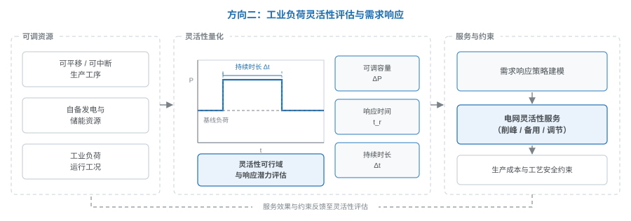
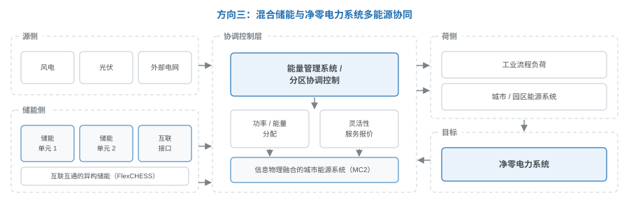
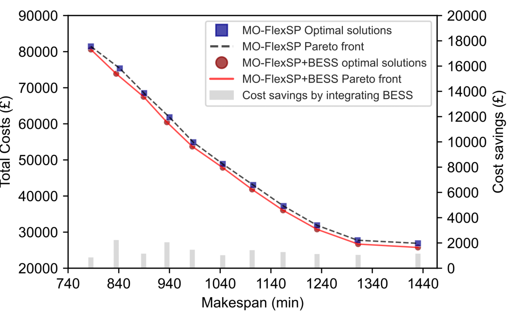
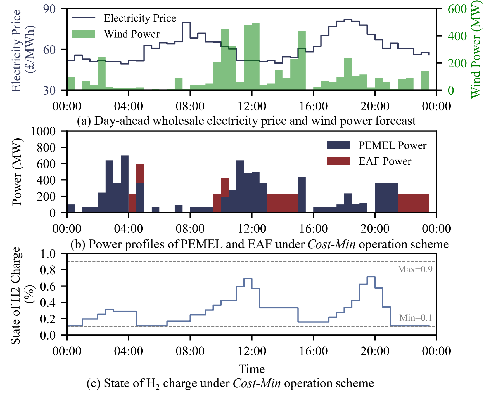

Research
研究方向
研究聚焦工业流程灵活性与低碳电力系统的协同优化，主要方向为：炼钢流程多目标优化排产、工业负荷灵活性评估与需求响应、混合储能系统与灵活性服务，以及面向净零电力系统的多能源协同。其中一条主线是高比例新能源电力系统中的电气化炼钢：在规划层确定钢厂低碳转型路径与投资，在调度层协调电弧炉、制氢与储能运行，使钢铁生产成为电力系统可用的灵活性资源。沿这一主线，一类工作面向电弧炉炼钢，把用电成本、间接碳排放与订单加工时间要求纳入统一的多目标优化；另一类面向氢基钢铁厂，把制氢、储氢、竖炉直接还原与电弧炉的耦合运行纳入短期调度，在既有设备配置下通过运行安排改善经济性。
关键词：工业负荷灵活性 · 炼钢流程优化排产 · 混合储能与需求响应 · 多能源系统协同
研究方向图示
研究框架总览
研究以工业流程（以电炉炼钢为主）为对象，从运行工况与量测数据出发，经过机理建模、多目标优化、灵活性评估与数字孪生验证，服务于低碳电力系统与电网灵活性服务；评估与部署结果再反馈修正模型与策略。对于工序深度耦合的流程，建模采用分过程建立资源—任务网络（RTN）模型、再以边界依赖约束集成的方式，统一刻画资源平衡、任务启停时序与持续时间以及物料传输时间；流程模拟工具擅长参数优化但难以处理任务间依赖，经济性评估若忽略短期运行约束，所得方案也可能在生产上不可行，因此这类统一建模是调度方案可行的基础。

方向一 · 炼钢流程多目标优化排产
对应 SUSTAIN Manufacturing Hub 子课题 1「基于炼钢流程机制的钢厂多目标日前排产优化」。以订单与交付期、能源价格、工艺与设备约束为输入，建立电炉炼钢流程机理模型并开发能量管理算法，在多目标下给出日前排产方案，并在钢厂数字孪生测试平台上验证。该方向由以下代表性工作支撑。
引文信息：Su P, Zhou Y*, Wu J. Multi-objective scheduling of a steelmaking plant integrated with renewable energy sources and energy storage systems: Balancing costs, emissions and make-span. Journal of Cleaner Production, 2023, 428: 139350. DOI: 10.1016/j.jclepro.2023.139350.
引言：钢铁行业占全球能源需求的约 8% 和能源相关 CO₂ 排放的约 7%，是典型的难减领域。二次炼钢（以废钢为原料的电弧炉炼钢）通过资源循环利用促进减排，但高度依赖电力的特性带来双重挑战：高昂的用电成本与显著的电网间接碳排放。多目标优化调度是降低用电成本和间接排放的有效手段，但既有资源—任务网络（RTN）模型仅关注电力消耗，未把间接碳排放纳入建模；客户对订单的加工时间要求（PTR，Processing Time Requirement）也普遍被忽视，而它直接影响生产工期（make-span），进而决定调度方案的可行性与时间灵活性利用效率。此外，炼钢批次生产与电价、新能源出力的时间尺度存在错配，限制了需求响应的精细度。该工作由此提出集成可再生能源与储能系统的炼钢厂多目标调度框架。
研究亮点
- 亮点1：扩展 RTN 的多目标 MILP 模型，将碳排放考虑进调度模型。在 RTN 框架中同时嵌入电力消耗与间接碳排放，建立多目标混合整数线性规划（MO-MILP）模型，目标涵盖用电成本最小化、间接排放最小化与 PTR 变化性适应，并严格纳入炉次间优先级、连铸连续性等炼钢关键工艺约束，确保调度方案可行。
- 亮点2：假设分析 + 法线边界交叉方法，让不同工期都有「最优解」可选。把 PTR 对工期的直接影响转化为不同工期场景下帕累托（Pareto）最优解的选择问题：先确定一系列代表性工期，再以法线边界交叉（NBI，Normal Boundary Intersection）方法为每个工期生成均匀分布的帕累托最优解，使炼钢厂可按实际加工时间要求灵活选择成本—排放平衡方案。
- 亮点3：储能系统入局，突破批次生产的时间粒度瓶颈。把电池储能系统（BESS）集成到需求响应模型，在新能源出力高峰时充电、电价高峰时放电，弥补批次生产的时间粒度不足，实现更精细的功率调节，从而提升可再生能源自消纳率、降低用电成本与排放。
结果分析：基于英国实际电价与新能源出力数据的案例研究，对比加工时间要求最宽裕与最紧缺两种极端场景，在帕累托前沿上找到对应解：用电成本与排放成本最高降低 68.5%，间接碳排放减少 83.5%，可再生能源自消纳率提升 12.1%。所提出的假设分析框架使调度方案能够适应不同生产工期需求，储能系统的引入则突破了批次生产的时间粒度限制，为钢铁行业深度参与需求响应提供了可行路径。
结论：炼钢多目标调度的难点不只是优化目标中多了碳排放，更在于工期需求的变化使单一工期方案无法适应实际生产，需要在不同工期场景下提供可选择的帕累托最优方案；储能系统有效弥补了批次生产时间粒度不足的短板。在后续工作中，可进一步考虑设备故障、订单变更等不确定性，研究鲁棒调度方法，并探索炼钢厂参与电力辅助服务市场的调度策略以及多厂协调调度对区域电网的影响。

方向二 · 工业负荷灵活性评估与需求响应
对应 MC2 项目中的工业负荷灵活性评估及参与电网需求侧响应服务潜力研究。从可平移／可中断工序、自备发电与储能等可调资源出发，用可调容量、响应时间与持续时长刻画灵活性可行域，进而建立需求响应策略，并评估其可提供的电网服务及所受的生产成本、工艺安全约束。氢基钢铁厂的调度工作是这一方向的代表性落点。
引文信息：Su P, Zhou Y*, Li H, Perez HD, Wu J. Cost-effective scheduling of a hydrogen-based iron and steel plant powered by a grid-assisted renewable energy system. Applied Energy, 2025, 384: 125412. DOI: 10.1016/j.apenergy.2025.125412.
引言：钢铁行业贡献全球工业 CO₂ 排放的约 25%，深度脱碳势在必行。氢基直接还原—电弧炉（H₂-DRI-EAF）工艺被公认为最具前景的深度脱碳路线之一，先导项目已验证其技术可行性；但电解水制氢的电力成本居高不下，构成氢基钢铁厂运行成本的主要部分，经济性仍是商业化瓶颈。当前研究缺乏同时满足运行约束与成本优化的短期调度方法：制氢、储氢／释氢、竖炉直接还原与电弧炉炼钢四个子过程紧密耦合且运行特性差异显著；HYSYS、Aspen Plus 等流程模拟工具擅长参数优化却难以处理任务间的复杂依赖，经济性评估若忽略短期运行约束，所得方案可能不可行；本地可再生能源出力与电价的时变性还要求调度方案具备动态响应能力。该工作由此提出集成 RTN 建模框架。
研究亮点
- 亮点1：分而治之、再无缝集成——子过程 RTN 建模 + 边界依赖约束。对制氢、储氢、直接还原与电弧炉炼钢四个子过程分别建立 RTN 模型，精确刻画各子过程内部的资源平衡、任务执行与设备约束，再以边界依赖约束将四个模型无缝集成，兼顾建模精度与计算效率。
- 亮点2：关键运行约束一个不落，调度方案落地可行。把氢气、直接还原铁（DRI，Direct Reduced Iron）与电力的资源平衡，任务启停时序、持续时间以及物料传输时间等关键约束全部纳入优化模型，避免忽略短期运行约束导致的方案不可行。
- 亮点3：电网辅助新能源系统协同优化，让制氢「追着风光跑」。在本地风电与电网联合供电下，综合考虑风电出力波动、分时电价与电网碳排放强度，优化各生产任务的启停时间、用电功率与电网购电策略，使制氢从固定负荷转变为灵活负荷，储氢系统在时间维度上实现氢气生产与消费的解耦。
结果分析：数值实验表明，与常规调度方法相比，所提方法在不同生产规模下均显著降低总运行成本。优化调度使制氢根据新能源出力与电价信号动态调整运行策略——该制的时候制、该停的时候停，储氢系统在时间维度上解耦氢气生产与消费。在既有设备配置下不增加投资即可改善经济性，说明该方向所刻画的调节能力可以直接转化为成本收益。
结论：氢基钢铁厂的经济可行性提升不只取决于技术进步或设备投资，运行调度优化同样可以在不增加投资的前提下显著降低成本；集成 RTN 框架为深度耦合的工业过程调度提供了可推广的建模范式。在后续工作中，可进一步研究氢基钢铁厂参与能量市场与辅助服务市场的优化策略、多厂与区域电网的协调调度，以及设备老化与维护计划对长期运行经济性的影响。

方向三 · 混合储能与净零电力系统多能源协同
对应 FlexCHESS 与 MC2 项目。研究工业流程灵活性与互联互通异构储能结合的混合储能系统，通过能量管理与分区协调控制，在电源侧、储能侧与荷侧（工业流程、城市能源系统）之间分配功率与能量，面向净零电力系统提供灵活性服务。

代表性研究工作
钢铁工业与电力系统的协同降碳需要同时处理规划与调度两类决策：在年尺度上确定低碳转型路径与投资，在小时与批次尺度上安排电弧炉、制氢与储能的运行。三项研究分别对应转型路径规划、电弧炉多目标调度与氢冶金流程协同。
研究对象 · 整合多种降碳选项的低碳钢厂
以电网、可再生能源、储能、天然气、氢气与废钢共同供能的电炉炼钢流程为对象，考察能量流与物料流如何在成本与碳排放约束下协同。

研究一 · 钢厂低碳转型路径规划
在区域能源条件约束下联合优化年度投资决策与代表场景的小时运行，以 GDP 模型联结投资与运行，并通过联合聚类得到 8 个代表场景。路径选择需在成本与减排之间权衡：EAF+DRI 路线相对 EAF-only 路线，累计折现总成本增加 18.1%，累计运行碳排放降低 41.0%；若自 2033 年起氢价额外下降 30%，全氢路线的采用时点由 2048 年提前至 2040 年。


研究二 · 电弧炉炼钢流程多目标调度
面向电弧炉—脱碳—精炼—连铸工序构建扩展资源—任务网络（RTN），统一描述生产、电能消耗与间接碳排放约束，并以 NBI 法求解成本—工期帕累托解集。在光伏 10 MW、风电 10 MW、储能 5 MW / 20 MWh 的算例中，相对 785 min 固定排产基准，1430 min 联合调度方案使电费与排放成本降低 68.5%、间接排放降低 83.5%；更宽松的工期释放调节灵活性，储能进一步降低成本。


研究三 · 氢冶金流程协同调度
以制氢、储氢、直接还原与电弧炉工序为对象，集成 RTN 与边界依赖约束，保障六批次生产在工艺上可行。制氢功率调节与电弧炉批次移时互补，储氢罐作为缓冲协调日前电价与风电出力波动。在成本最优方案下，总运行成本由 533.8 k£ 降至 221.1 k£，降幅 58.58%；成本项包含购电、弃风惩罚与间接排放。


科研项目
SUSTAIN Manufacturing Hub（SUSTAIN 制造中心）
英国工程与自然科学基金会资助项目。负责子课题 1「基于炼钢流程机制的钢厂多目标日前排产优化」，开发电炉炼钢流程能量管理算法并协助部署于钢厂数字孪生测试平台；相关成果获项目年会最佳海报奖。
FlexCHESS · 基于互联互通的混合储能系统的灵活性服务
研究工业流程灵活性与储能系统结合的混合储能系统及其在电网灵活性服务中的应用；相关成果在 IEEE PES ISGT Europe、IEEE EI² 会议作口头报告。 项目链接
MC2 · 信息物理融合的城市能源系统分区协调控制
负责工业负荷灵活性评估及参与电网需求侧响应服务潜力研究；与 SUSTAIN 合作开发面向炼钢厂智能灵活运营的数字孪生方法。 项目链接
方法与技术方向
研究与建模
- 多目标优化排产
- 工业负荷灵活性评估
- 需求响应策略建模
- 能量管理算法
- 数字孪生方法
系统与技术方向
- 炼钢流程建模与调度
- 混合储能系统
- 可再生能源与储能协同
- 城市多能源系统
- 净零电力系统
科研项目协作
- 英国 EPSRC 项目子课题
- 欧盟「欧洲地平线」计划
- 中英国际合作重点项目
- 产学研合作与工业部署